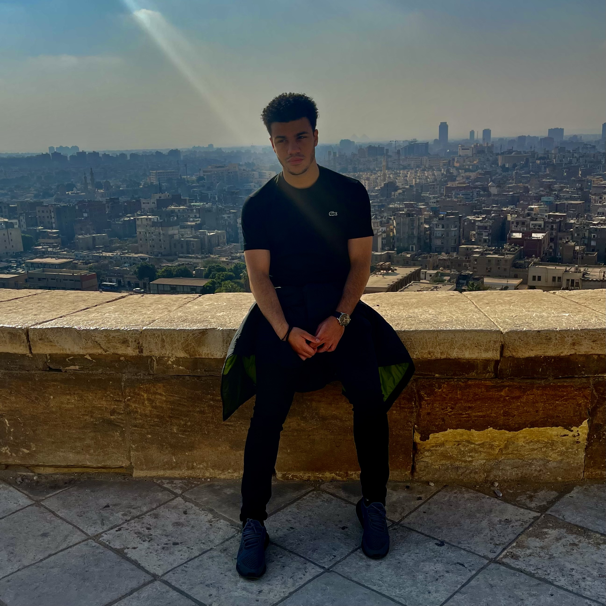

Personal Biography
Hi I am Fathy Abdelshahid, a dynamic and driven individual with a rich cultural background, having been born and raised in Cairo, Egypt, before moving to Australia at the age of 12. As a passionate soccer enthusiast, I have not only excelled on the field but also demonstrated exceptional leadership skills as the senior school captain in high school. This early leadership experience paved the way for my academic pursuits at Monash University, where I am currently undertaking double degrees in Engineering and Computer Science.
My academic journey at Monash University is marked by a deep commitment to excellence and a keen interest in technology and innovation. Despite facing numerous challenges and having all odds against me, I have prevailed in my studies, demonstrating resilience and determination. Beyond the classroom, my love for travel has allowed me to explore new cultures and gain a broader perspective, further enriching my personal and professional growth. With a strong foundation in both technical and interpersonal skills, I am poised to make a significant impact in my future endeavors in the engineering and computer science fields.